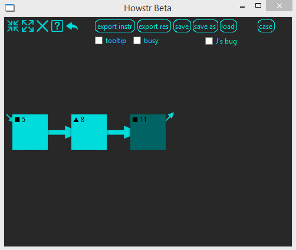

Putting the 'easy' in hardware.
Thank you so much for giving Howstr a try. We're excited to share it with you. The thing about Howstr is that it's fun and just sort of feels "right" when you use it to capture a real project that inspires you. Mapping/modeling in Howstr takes the same amount of time (or less) than writing instructions the traditional way, but the benefits are so much greater.
First of all, Howstr's networks evolve over time. So you can just dive in with whatever piece of information comes to mind first. You don't have to plan ahead or consider the final structure. If at any point you remember that you need another tool, or decide to rearrange a couple steps, the change is fast and easy.
Here's an example using a grilled cheese sandwich.
The best way to use Howstr is to start out vague. Just kind of sketch out the project. If you need more detail you can always go back and add it later.
Also, since Howstr is based on NotionAll, the entire history of changes is preserved. If you start clicking undo you can literally roll the project back to a blank slate (if you wanted to do that, we don't judge). The undo-ability of the project is an inherent part of the data, so if you open someone else's project you could see everything they did with it if you wanted to (see, no judgment is important).
There's a lot more detail in the dictionary . If you notice something missing or mistaken please let us know.